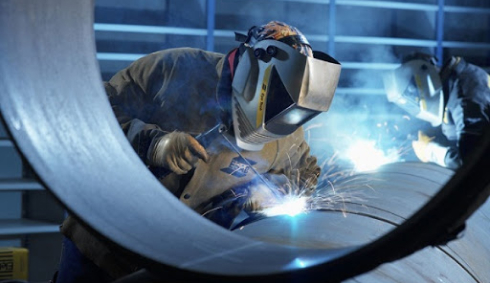
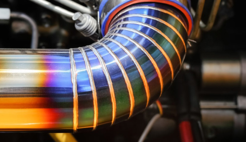
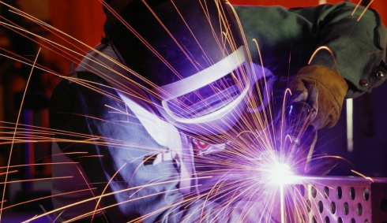
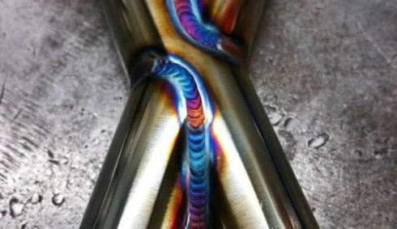
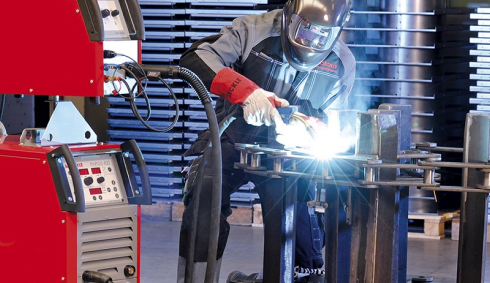
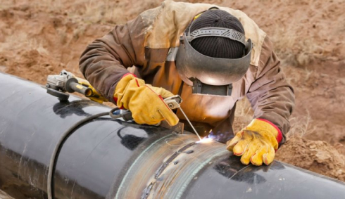

Полезные советы

10.04.2021
Как принято считать, многие известные личности освещают
Посмотрите на красоту и многообразие технических решений современного мира. Причудливые силуэты и утонченные формы, где кажется нет предела буйству
Читать полностью

10.04.2021
Особенности полуавтоматической сварки
с применением углекислого газа
Сварка с применением углекислоты по принципу работы чем-то напоминает газовую сварку. Возможно производить соединение с защитой, так и без нее.
Читать полностью

10.04.2021
Принципы работы аргонодуговой сварки или как правильно варить аргоном
Одна из разновидностей сварки металлов – аргонодуговая, в процессе которой используется газ аргон и электрическая дуга. Эта технология прекрасно...
Читать полностью

10.04.2021
Электрододержатели, сравнение производителей: ESAB, FoxWeld, FUBAG
Для качественного выполнения сварочных работ помимо сварочного агрегата потребуются специальные принадлежности. В дополнение к основному аппарату
Читать полностью

10.04.2021
Сравнение производителей сварочного оборудования: ESAB, FoxWeld, Сварог
Сварка с применением углекислоты по принципу работы чем-то напоминает газовую сварку. Возможно производить соединение с защитой, так и без нее.
Читать полностью

10.04.2021
Электроды для дуговой сварки аргоном: особенности, разновидности, принципы выбора
Аргонодуговая установка и применяемые при её использовании технологии призваны расширить круг применения сварочных процессов и обеспечить...
Читать полностью